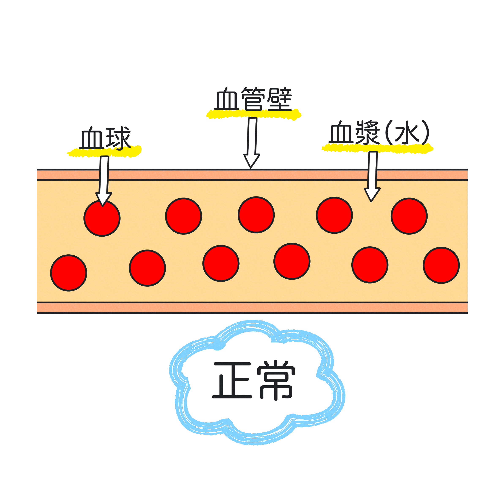

体液はなぜ移動する？
ではここからは炎症反応により、循環血液量にどのような影響が出るのか、を学んでいきましょう。皆さん、炎症反応の４兆候のうち、「腫脹」という反応がありましたね。この腫脹と今回の内容は関連してきます。
腫脹がなぜ起きるのか、そのメカニズムを学んでいきましょう。
まず下の図をご覧ください。

左の図は正常、右の図は炎症がおきた状態の血管です。
血液は血球成分（赤血球・白血球・血小板）と血漿（つまり水）で構成されています。
通常だと血管壁は隙間がありませんが、炎症が起きると右の図のように目が粗くなってしまいます。
炎症により血管壁がこのように変化したことを血管透過性の亢進といいます。
その結果、分子の小さい血漿は血管外へ漏れ出してしまいます。
ただ、血管壁が損傷したわけではないので、血球成分は出ていきません。
だから出血しているわけではありませんので、混乱しないようにしてください。
ここで皆さん、スターバックスを思い浮かべてください。
スターバックスのコンセプトを知っていますか？スターバックスは、顧客となる人にサードプレイスを提供したい、という願いがあるそうです。
例えばサラリーマンが、家でも会社でもなく、くつろげる場所、つまり第３の場所という意味です。
つまり、サードプレイスとは何か特定の場所があるわけではなく、普段はない場所のことを意味しています。
サードスペースもこれと同じイメージです。
発熱のセットポイントと同じく、炎症反応が落ち着けばサードスペースに移行していた体液（血漿成分）が再び血管内に戻ってきます。
この現象をリフィリングと言います。

【注意】
血管を中心に見ると、血液が戻ってくるのでリフィリングですが、尿を中心に見た時には違った表現となります。
循環血液量が増えた結果、腎臓に流れ込む血液の量が増えて,その結果尿の量が増えます。
尿がたくさん出る状態を”利尿”というので、「利尿期」といいます。
どちらもメカニズムは同じで、見る視点が異なるだけです。
混乱しないようにしましょう。